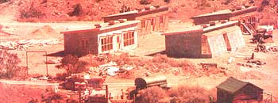

About 70 miles north of Santa Fe-set amongst the rugged sandstone cliffs of northern New Mexico-is the Ghost Ranch, an adult study center owned and operated by the United Presbyterian Church. But Ghost Ranch is far more than a church retreat . . . it's also the site of one of the most important passive solar heating experiments in the U.S. today: the Sundwellings Project.
This program was born roughly three years ago, when a representative of the Four Corners Regional Commission (a federally funded agency administered by the governors of New Mexico, Arizona, Colorado, and Utah) asked New Mexico solar energy pioneer Peter van Dresser (see The Plowboy Interview, MOTHER NO. 35) if he would be interested in receiving grant money for the purpose of designing a solar heating unit that could be retrofitted to mobile homes.
Mr. van Dresser came up with a better idea: "Rather than try to solarize house trailers," he suggested, "why not spend the money to develop inexpensive, owner-built solar homes appropriate to the human ecology of the local area?" Surprisingly, the Regional Commission spokesman encouraged van Dresser to write up a proposal and told him that-once submitted-his paper would be given a "sympathetic reading".
To make a long story short, the Four Corners Regional Commission liked what van Dresser had to say and came up with a $34,000 grant calling for Peter to head up a team of architects, engineers, and solar experimenters. Their job: design and supervise the construction of a variety of low-technology solar-heated dwellings made entirely of indigenous materials. (Additional funding-to make the construction phase of the project into a manpower training program-came from the state of New Mexico . . . bringing the total amount of "allocated monies" to $102,000.)
The very first thing the Sundwellings design team (which initially included architects William Lumpkins and David Wright, engineers Francis Wessling and B.T. Rogers, and New Mexico Solar Energy Association Executive Director Keith Haggard) did-even before sharpening their pencils-was to ask the local people what their needs and desires were in a dwelling . . what they required in terms of food storage areas, toolsheds, harvest rooms, etc. This, of course, made the Sundwellings Project unconventional from the start. (Other federally funded housing projects in New Mexico have seen fit to plunk California tract-type houses down in the middle of Indian reservations, without the slightest regard for the traditions of the people or the ecology of the area.)
What the Sundwellings team found-not unexpectedly-was that the individuals who live in the 400-year-old pueblos and villages of northern New Mexico tend to be conservative and prefer their traditional (some would say "primitive") way of life to the keep-up-with-the-Joneses style of living so prevalent in other parts of the U.S.
This meant two things: First, the design team would have to work in the classically beautiful Southwestern architectural motif (which uses adobe brick walls, flagstone floors, peeled pine roof beams, and so on) . . no far-out domes, zomes, or plastic bubbles. Second, all the pumps, fans, and other high-technology geeble-fetzers usually found in solar heating setups would have to go. Whatever kind(s) of solar heating equipment the design team decided on would have to be-above all-simple and reliable.
Ultimately, it became apparent to the Sundwellings designers that they could get the most information per dollar spent if they were to build-and carefully monitor the performance of- four separate dwellings: one featuring a lean-to greenhouse, a second utilizing a Trombe wall collector, a third unit employing the "direct gain" concept, and a fourth structure (similar in construction to the other three, but having no special "solar" features) to serve as a control. (See the accompanying illustrations for details.)
Construction of the four 20' X 40' test units began early in 1976. Mark Chalom, Aubrey Owen, and Quentin Wilson-three highly creative (and enthusiastic) solar energy experimenters from the northern New Mexico area-served as on-site construction foremen for the project. (As part of their duties, these three men provided workers with two hours of instruction each day on solar energy fundamentals and basic building techniques.)
The 16 trainee-workers who participated in the project-all men from the surrounding pueblos and villages-did their own millwork, quarried flagstones, cut timber, and made all the adobe bricks for each "Sundwelling". (Virtually all the materials used in the four buildings came from the immediate area.)
The Sundwellings test units are essentially identical in size, construction, and compass orientation . . only the solar heating features differ from one building to the next. This makes it possible to compare the performance of the three different modes of heat collection on a direct basis.
To get the hard facts on how well each dwelling performs relative to the others, the Sundwellings engineers placed 50 separate thermocouples in strategic locations inside each of the four buildings. (In addition, the butane-fired backup heaters installed in the four test units are equipped with individual metering devices.) Periodically, the information provided by these probes-as well as that taken from meteorological monitoring equipment set up outside the dwellings-can (and will) be fed into a computer for detailed analysis.
Whether the new passively solar-heated Ghost Ranch guest cottages will indeed obtain 70 to 80% of their midwinter heating requirements from the sun (as the designers have projected) is anyone's guess at this point. Although the Sundwellings test modules are now complete, the first results from this ongoing study of passive solar heating won't be in until the spring of 1978 (since it'll take a full year to gather a meaningful amount of data).
Already, however, the Sundwellings Project has proven its usefulness from a number of standpoints:
First, the Project has served to introduce local (Ghost Ranch-area) residents to the "hows" and "whys" of passive solar home construction. (Similarly, the venture has helped certain government administrators understand the nature of grassroots "folk construction". According to Peter van Dresser, the Four Corners Regional Commission representatives had trouble-at first-adjusting their ways of thinking to accommodate the concept of low-technology building construction.)
Second, the undertaking has resulted in the establishment of the world's first passive solar dwelling test facility. (In a year's time, it should be a matter of record whether the lean-to greenhouse, the Trombe wall, or the "direct gain" mode of construction is the most efficient way to passively heat an adobe building in northern New Mexico.)
Third, the Sundwellings Project has proven-other government projects notwithstanding-that it is possible to design and build low-cost solar-heated dwellings that blend with their natural surroundings. (As a side benefit, the scores of Ghost Ranch guests who'll be staying in the four solar-heated cottages over the coming months will-in all likelihood-take this message back to their home communities.)
For once, then, it looks as though the public has gotten a fair return on its solar energy investment. From its conception to its final implementation, this is one federally funded project that's truly been "of the people, by the people, and for the people"!
Jim DeKorne-author of the above article-says that Peter van Dresser (head of the original Sundwellings design team and longtime solar energy experimenter) has recently finished a book-entitled Homegrown Sundwellings-illustrating the principles of passive solar home design. According to Jim, the manual comes complete with a variety of floor plans, "each of which has been deliberately blueprinted for the construction of one room at a time". To get your copy of Homegrown Sundwellings, send $6.50 (plus 50 cents for postage and handling) to the Lightning Tree Press, P.O. Box 1837, Santa Fe, N.M. 87501 . . . or ask for the volume of your favorite bookstore.-THE EDITORS.
|
 GREENHOUSE UNIT: Warm air from the attached greenhouse rises into the room while cold room air sinks into the greenhouse to be heated. Warmth is stored overnight in the walls and floor of the room . . . which can be closed off from the greenhouse at any time to prevent unwanted heat loss or gain. Note that the greenhouse is dug 2-1/2 feet into the ground to protect it from frost. This design extends the northern New Mexico growing season from 4 to 10 months. |
TROMBE WALL UNIT: Air is heated in the space between the double glass panes and the south adobe wall. It then expands, rises, and enters the room through the adobe wall's upper vents. At the same time, cooler air is drawn from the room through the lower vents and into the Trombe wall space, where it?in turn?is heated, rises, etc. The south wall also stores heat which radiates into the room. Other adobe walls and flagstones store additional warmth. |
DIRECT GAIN UNIT: The simplest of all the solar heating systems used in the project. Large south windows in this house allow sunlight to flood the floor and walls of the main room during the day and the resulting warmth is stored in the adobe and flagstone. Heavy curtains are pulled across the windows at night to prevent heat loss. Eaves over the big windows have been designed to block the high, hot summer sun but admit the rays of the low winter sun. |
|
CONTROL UNIT: This house?and all the others in the Sundwellings Project?is constructed of adobe (which stores heat well but which is not a good insulator) and has a double north wall filled with 10 inches of pumice to retard heat loss. Pumice is also used for perimeter insulation, and the building's ceiling is insulated with 10 inches of sawdust. Although it contains no special solar features, this is a good example of an energy-conserving building. |
|
|